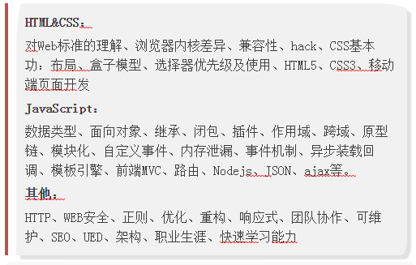
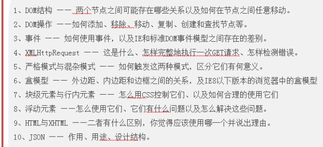
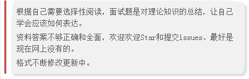
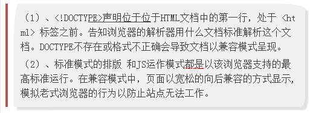
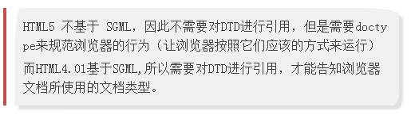

来自：markyun My-blog · GitHub.
链接：https://github.com/markyun/My-blog/tree/master/Front-end-Developer-Questions/Questions-and-Answers （点击尾部阅读原文前往）
已获授权
备注：本文题目和答案将定期更新，请收藏原文链接
前言
本文由我收集总结了一些优质的前端面试题，初学者阅后也要用心钻研其中的原理，重要知识需要系统学习、透彻学习，形成自己的知识链。万不可投机取巧，只求面试过关是错误的！
前端还是一个年轻的行业，新的行业标准， 框架， 库都不断在更新和新增，正如赫门在2015深JS大会上的《前端服务化之路》主题演讲中说的一句话：“每18至24个月，前端都会难一倍”，这些变化使前端的能力更加丰富、创造的应用也会更加完美。所以关注各种前端技术, 跟上快速变化的节奏, 也是身为一个前端程序员必备的技能之一。
最近也收到许多微博私信的鼓励和更正题目信息，后面会经常更新题目和答案到github博客，但其他旧版本的分支和其他网站出现的拷贝版本上面的错误回答我也管不了嘞。希望更多的前端开发可以达到既能使用也会表达，对理论知识有自己的理解，也可根据下面的知识点一个一个去进阶学习,形成自己的职业技能链。
面试有几点需注意：(来源寒冬winter 老师，github:@wintercn)
1、面试题目：根据你的等级和职位的变化，入门级到专家级，广度和深度都会有所增加。
2、题目类型：理论知识，算法，项目细节、技术视野、开放性题，工作案例。
3、细节追问：可以确保问到你开始不懂或面试官开始不懂为止，这样可以大大延展题目的区分度和深度，知道你的实际能力。因为这种知识关联是长时期的学习，临时抱佛脚绝对是记不住的。
4、回答问题再棒，面试官（可能是你面试职位的直接领导），会考虑我要不要这个人做我的同事？所以态度很重要、除了能做事，还要会做人。（感觉更像是相亲( •̣̣̣̣̣̥́௰•̣̣̣̣̣̥̀ )）
5、资深的前端开发能把absolute和relative弄混，这样的人不要也罢，因为团队需要的是：你这个人具有可以依靠的才能（靠谱）。
前端开发面试知识点大纲：

作为一名前端工程师，无论工作年头长短都应该必须掌握的知识点：
此条由 王子墨 发表在 攻城师的实验室

备注：

更新时间: 2015-9-10
HTML
Doctype作用？标准模式与兼容模式各有什么区别?

HTML5 为什么只需要写 <!DOCTYPE HTML>？

行内元素有哪些？块级元素有哪些？ 空(void)元素有那些？
首先：CSS规范规定，每个元素都有display属性，确定该元素的类型，每个元素都有默认的display值，如div的display默认值为“block”，则为“块级”元素；span默认display属性值为“inline”，是“行内”元素。
（1）行内元素有：a b span img input select strong（强调的语气）
（2）块级元素有：div ul ol li dl dt dd h1 h2 h3 h4…p
（3）常见的空元素：
<br> <hr> <img> <input> <link> <meta>
鲜为人知的是：
<area> <base> <col> <command> <embed> <keygen> <param> <source> <track> <wbr>
页面导入样式时，使用link和@import有什么区别？
（1）link属于XHTML标签，除了加载CSS外，还能用于定义RSS, 定义rel连接属性等作用；而@import是CSS提供的，只能用于加载CSS;
（2）页面被加载的时，link会同时被加载，而@import引用的CSS会等到页面被加载完再加载;
（3）import是CSS2.1 提出的，只在IE5以上才能被识别，而link是XHTML标签，无兼容问题;
介绍一下你对浏览器内核的理解？
主要分成两部分：渲染引擎(layout engineer或Rendering Engine)和JS引擎。
渲染引擎：负责取得网页的内容（HTML、XML、图像等等）、整理讯息（例如加入CSS等），以及计算网页的显示方式，然后会输出至显示器或打印机。浏览器的内核的不同对于网页的语法解释会有不同，所以渲染的效果也不相同。所有网页浏览器、电子邮件客户端以及其它需要编辑、显示网络内容的应用程序都需要内核。
JS引擎则：解析和执行javascript来实现网页的动态效果。
最开始渲染引擎和JS引擎并没有区分的很明确，后来JS引擎越来越独立，内核就倾向于只指渲染引擎。
常见的浏览器内核有哪些？
Trident内核：IE,MaxThon,TT,The World,360,搜狗浏览器等。[又称MSHTML]
Gecko内核：Netscape6及以上版本，FF,MozillaSuite/SeaMonkey等
Presto内核：Opera7及以上。 [Opera内核原为：Presto，现为：Blink;]
Webkit内核：Safari,Chrome等。 [ Chrome的：Blink（WebKit的分支）]
详细文章：浏览器内核的解析和对比 - 依水间
html5有哪些新特性、移除了那些元素？如何处理HTML5新标签的浏览器兼容问题？如何区分 HTML 和 HTML5？
* HTML5 现在已经不是 SGML 的子集，主要是关于图像，位置，存储，多任务等功能的增加。
绘画 canvas;
用于媒介回放的 video 和 audio 元素;
本地离线存储 localStorage 长期存储数据，浏览器关闭后数据不丢失;
sessionStorage 的数据在浏览器关闭后自动删除;
语意化更好的内容元素，比如 article、footer、header、nav、section;
表单控件，calendar、date、time、email、url、search;
新的技术webworker, websockt, Geolocation;
移除的元素：
纯表现的元素：basefont，big，center，font, s，strike，tt，u;
对可用性产生负面影响的元素：frame，frameset，noframes；
* 支持HTML5新标签：
IE8/IE7/IE6支持通过document.createElement方法产生的标签，
可以利用这一特性让这些浏览器支持HTML5新标签，
浏览器支持新标签后，还需要添加标签默认的样式。
当然最好的方式是直接使用成熟的框架、使用最多的是html5shim框架
<!--[if lt IE 9]>
<script> src="http://html5shim.googlecode.com/svn/trunk/html5.js"</script>
<![endif]-->
* 如何区分： DOCTYPE声明\新增的结构元素\功能元素
简述一下你对HTML语义化的理解？
用正确的标签做正确的事情。
html语义化让页面的内容结构化，结构更清晰，便于对浏览器、搜索引擎解析;
及时在没有样式CCS情况下也以一种文档格式显示，并且是容易阅读的;
搜索引擎的爬虫也依赖于HTML标记来确定上下文和各个关键字的权重，利于SEO;
使阅读源代码的人对网站更容易将网站分块，便于阅读维护理解。
HTML5的离线储存怎么使用，工作原理能不能解释一下？
在用户没有与因特网连接时，可以正常访问站点或应用，在用户与因特网连接时，更新用户机器上的缓存文件。
原理：HTML5的离线存储是基于一个新建的.appcache文件的缓存机制(不是存储技术)，通过这个文件上的解析清单离线存储资源，这些资源就会像cookie一样被存储了下来。之后当网络在处于离线状态下时，浏览器会通过被离线存储的数据进行页面展示。
如何使用：
1、页面头部像下面一样加入一个manifest的属性；
2、在cache.manifest文件的编写离线存储的资源；
CACHE MANIFEST
#v0.11
CACHE:
js/app.js
css/style.css
NETWORK:
resourse/logo.png
FALLBACK:
/ /offline.html
3、在离线状态时，操作window.applicationCache进行需求实现。
详细的使用请参考：有趣的HTML5：离线存储
浏览器是怎么对HTML5的离线储存资源进行管理和加载的呢？
在线的情况下，浏览器发现html头部有manifest属性，它会请求manifest文件，如果是第一次访问app，那么浏览器就会根据manifest文件的内容下载相应的资源并且进行离线存储。如果已经访问过app并且资源已经离线存储了，那么浏览器就会使用离线的资源加载页面，然后浏览器会对比新的manifest文件与旧的manifest文件，如果文件没有发生改变，就不做任何操作，如果文件改变了，那么就会重新下载文件中的资源并进行离线存储。
离线的情况下，浏览器就直接使用离线存储的资源。
详细的使用请参考：有趣的HTML5：离线存储
请描述一下 cookies，sessionStorage 和 localStorage 的区别？
localStorage 长期存储数据，浏览器关闭后数据不丢失；
sessionStorage 数据在浏览器关闭后自动删除。
iframe有那些缺点？
*iframe会阻塞主页面的Onload事件；
*iframe和主页面共享连接池，而浏览器对相同域的连接有限制，所以会影响页面的并行加载。
使用iframe之前需要考虑这两个缺点。如果需要使用iframe，最好是通过javascript
动态给iframe添加src属性值，这样可以可以绕开以上两个问题。
Label的作用是什么？是怎么用的？
label标签来定义表单控制间的关系,当用户选择该标签时，浏览器会自动将焦点转到和标签相关的表单控件上。
<label for="Name">Number:</label> <input type=“text“name="Name" id="Name"/>
<label>Date:<input type="text" name="B" /></label>
HTML5的form如何关闭自动完成功能？
给不想要提示的 form 或下某个input 设置为autocomplete=off。
请描述一下 cookies，sessionStorage 和 localStorage 的区别？
cookie在浏览器和服务器间来回传递。 sessionStorage和localStorage不会
sessionStorage和localStorage的存储空间更大；
sessionStorage和localStorage有更多丰富易用的接口；
sessionStorage和localStorage各自独立的存储空间；
如何实现浏览器内多个标签页之间的通信? (阿里)
调用localstorge、cookies等本地存储方式
webSocket如何兼容低浏览器？(阿里)
Adobe Flash Socket 、 ActiveX HTMLFile (IE) 、 基于 multipart 编码发送 XHR 、 基于长轮询的 XHR
CSS
介绍一下CSS的盒子模型？
（1）有两种， IE 盒子模型、标准 W3C 盒子模型；IE的content部分包含了 border 和 pading;
（2）盒模型： 内容(content)、填充(padding)、边界(margin)、 边框(border).
CSS 选择符有哪些？哪些属性可以继承？优先级算法如何计算？ CSS3新增伪类有那些？
* 1.id选择器（ # myid）
2.类选择器（.myclassname）
3.标签选择器（div, h1, p）
4.相邻选择器（h1 + p）
5.子选择器（ul > li）
6.后代选择器（li a）
7.通配符选择器（ * ）
8.属性选择器（a[rel = "external"]）
9.伪类选择器（a: hover, li: nth - child）
* 可继承的样式： font-size font-family color, UL LI DL DD DT;
* 不可继承的样式：border padding margin width height ;
* 优先级就近原则，同权重情况下样式定义最近者为准;
* 载入样式以最后载入的定位为准;
优先级为:
!important > id > class > tag
important 比 内联优先级高
CSS3新增伪类举例：
p:first-of-type 选择属于其父元素的首个 <p> 元素的每个 <p> 元素。
p:last-of-type 选择属于其父元素的最后 <p> 元素的每个 <p> 元素。
p:only-of-type 选择属于其父元素唯一的 <p> 元素的每个 <p> 元素。
p:only-child 选择属于其父元素的唯一子元素的每个 <p> 元素。
p:nth-child(2) 选择属于其父元素的第二个子元素的每个 <p> 元素。
:enabled :disabled 控制表单控件的禁用状态。
:checked 单选框或复选框被选中。
如何居中div？如何居中一个浮动元素？
给div设置一个宽度，然后添加margin:0 auto属性
div{
width:200px;
margin:0 auto;
}
居中一个浮动元素
确定容器的宽高 宽500 高 300 的层
设置层的外边距
.div {
Width:500px ; height:300px;//高度可以不设
Margin: -150px 0 0 -250px;
position:relative;相对定位
background-color:pink;//方便看效果
left:50%;
top:50%;
}
列出display的值，说明他们的作用。position的值， relative和absolute定位原点是？
1、block 象块类型元素一样显示。
none 缺省值。象行内元素类型一样显示。
inline-block 象行内元素一样显示，但其内容象块类型元素一样显示。list-item 象块类型元素一样显示，并添加样式列表标记。
2、*absolute
生成绝对定位的元素，相对于 static 定位以外的第一个父元素进行定位。
*fixed （老IE不支持）
生成绝对定位的元素，相对于浏览器窗口进行定位。
*relative
生成相对定位的元素，相对于其正常位置进行定位。
* static 默认值。没有定位，元素出现在正常的流中
*（忽略 top, bottom, left, right z-index 声明）。
* inherit 规定从父元素继承 position 属性的值。
CSS3有哪些新特性？
CSS3实现圆角（border-radius:8px），阴影（box-shadow:10px），
对文字加特效（text-shadow、），线性渐变（gradient），旋转（transform）
transform:rotate(9deg) scale(0.85,0.90) translate(0px,-30px) skew(-9deg,0deg);//旋转,缩放,定位,倾斜
增加了更多的CSS选择器 多背景 rgba
一个满屏 品 字布局 如何设计?
常见兼容性问题？
* png24位的图片在iE6浏览器上出现背景，解决方案是做成PNG8.
* 浏览器默认的margin和padding不同。解决方案是加一个全局的*{margin:0;padding:0;}来统一。
* IE6双边距bug:块属性标签float后，又有横行的margin情况下，在ie6显示margin比设置的大。
浮动ie产生的双倍距离 #box{ float:left; width:10px; margin:0 0 0 100px;}
这种情况之下IE会产生20px的距离，解决方案是在float的标签样式控制中加入 ——_display:inline;将其转化为行内属性。(_这个符号只有ie6会识别)
渐进识别的方式，从总体中逐渐排除局部。
首先，巧妙的使用“\9”这一标记，将IE游览器从所有情况中分离出来。
接着，再次使用“+”将IE8和IE7、IE6分离开来，这样IE8已经独立识别。
css
.bb{
background-color:#f1ee18;/*所有识别*/
.background-color:#00deff\9; /*IE6、7、8识别*/
+background-color:#a200ff;/*IE6、7识别*/
_background-color:#1e0bd1;/*IE6识别*/
}
* IE下,可以使用获取常规属性的方法来获取自定义属性,
也可以使用getAttribute()获取自定义属性;
Firefox下,只能使用getAttribute()获取自定义属性.
解决方法:统一通过getAttribute()获取自定义属性.
* IE下,even对象有x,y属性,但是没有pageX,pageY属性;
Firefox下,event对象有pageX,pageY属性,但是没有x,y属性.
* 解决方法：（条件注释）缺点是在IE浏览器下可能会增加额外的HTTP请求数。
* Chrome 中文界面下默认会将小于 12px 的文本强制按照 12px 显示,
可通过加入 CSS 属性 -webkit-text-size-adjust: none; 解决.
超链接访问过后hover样式就不出现了 被点击访问过的超链接样式不在具有hover和active了解决方法是改变CSS属性的排列顺序:
L-V-H-A : a:link {} a:visited {} a:hover {} a:active {}
为什么要初始化CSS样式。
- 因为浏览器的兼容问题，不同浏览器对有些标签的默认值是不同的，如果没对CSS初始化往往会出现浏览器之间的页面显示差异。
- 当然，初始化样式会对SEO有一定的影响，但鱼和熊掌不可兼得，但力求影响最小的情况下初始化。
*最简单的初始化方法就是： * {padding: 0; margin: 0;} （不建议）
淘宝的样式初始化：
body, h1, h2, h3, h4, h5, h6, hr, p, blockquote, dl, dt, dd, ul, ol, li, pre, form, fieldset, legend, button, input, textarea, th, td { margin:0; padding:0; }
body, button, input, select, textarea { font:12px/1.5tahoma, arial, \5b8b\4f53; }
h1, h2, h3, h4, h5, h6{ font-size:100%; }
address, cite, dfn, em, var { font-style:normal; }
code, kbd, pre, samp { font-family:couriernew, courier, monospace; }
small{ font-size:12px; }
ul, ol { list-style:none; }
a { text-decoration:none; }
a:hover { text-decoration:underline; }
sup { vertical-align:text-top; }
sub{ vertical-align:text-bottom; }
legend { color:#000; }
fieldset, img { border:0; }
button, input, select, textarea { font-size:100%; }
table { border-collapse:collapse; border-spacing:0; }
absolute的containing block计算方式跟正常流有什么不同？
position跟display、margin collapse、overflow、float这些特性相互叠加后会怎么样？
对BFC规范的理解？
（W3C CSS 2.1 规范中的一个概念,它决定了元素如何对其内容进行定位,以及与其他元素的关 系和相互作用。）
css定义的权重
以下是权重的规则：标签的权重为1，class的权重为10，id的权重为100，以下例子是演示各种定义的权重值：
/*权重为1*/
div{
}
/*权重为10*/
.class1{
}
/*权重为100*/
#id1{
}
/*权重为100+1=101*/
#id1 div{
}
/*权重为10+1=11*/
.class1 div{
}
/*权重为10+10+1=21*/
.class1 .class2 div{
}
如果权重相同，则最后定义的样式会起作用，但是应该避免这种情况出现
解释下浮动和它的工作原理？清除浮动的技巧
用过媒体查询，针对移动端的布局吗？
使用 CSS 预处理器吗？喜欢那个？
SASS
如果需要手动写动画，你认为最小时间间隔是多久，为什么？（阿里）
多数显示器默认频率是60Hz，即1秒刷新60次，所以理论上最小间隔为1/60＊1000ms ＝ 16.7ms
display:inline-block 什么时候会显示间隙？(携程)
移除空格、使用margin负值、使用font-size:0、letter-spacing、word-spacing
JavaScript
JavaScript原型，原型链 ? 有什么特点？
说几条写JavaScript的基本规范？
1.不要在同一行声明多个变量。
2.请使用 ===/!==来比较true/false或者数值
3.使用对象字面量替代new Array这种形式
4.不要使用全局函数。
5.Switch语句必须带有default分支
6.函数不应该有时候有返回值，有时候没有返回值。
7.For循环必须使用大括号
8.If语句必须使用大括号
9.for-in循环中的变量 应该使用var关键字明确限定作用域，从而避免作用域污染。
eval是做什么的？
它的功能是把对应的字符串解析成JS代码并运行；
应该避免使用eval，不安全，非常耗性能（2次，一次解析成js语句，一次执行）。
null，undefined 的区别？
写一个通用的事件侦听器函数。
// event(事件)工具集，来源：github.com/markyun
markyun.Event = {
// 页面加载完成后
readyEvent : function(fn) {
if (fn==null) {
fn=document;
}
var oldonload = window.onload;
if (typeof window.onload != 'function') {
window.onload = fn;
} else {
window.onload = function() {
oldonload();
fn();
};
}
},
// 视能力分别使用dom0||dom2||IE方式 来绑定事件
// 参数： 操作的元素,事件名称 ,事件处理程序
addEvent : function(element, type, handler) {
if (element.addEventListener) {
//事件类型、需要执行的函数、是否捕捉
element.addEventListener(type, handler, false);
} else if (element.attachEvent) {
element.attachEvent('on' + type, function() {
handler.call(element);
});
} else {
element['on' + type] = handler;
}
},
// 移除事件
removeEvent : function(element, type, handler) {
if (element.removeEventListener) {
element.removeEventListener(type, handler, false);
} else if (element.datachEvent) {
element.detachEvent('on' + type, handler);
} else {
element['on' + type] = null;
}
},
// 阻止事件 (主要是事件冒泡，因为IE不支持事件捕获)
stopPropagation : function(ev) {
if (ev.stopPropagation) {
ev.stopPropagation();
} else {
ev.cancelBubble = true;
}
},
// 取消事件的默认行为
preventDefault : function(event) {
if (event.preventDefault) {
event.preventDefault();
} else {
event.returnValue = false;
}
},
// 获取事件目标
getTarget : function(event) {
return event.target || event.srcElement;
},
// 获取event对象的引用，取到事件的所有信息，确保随时能使用event；
getEvent : function(e) {
var ev = e || window.event;
if (!ev) {
var c = this.getEvent.caller;
while (c) {
ev = c.arguments[0];
if (ev && Event == ev.constructor) {
break;
}
c = c.caller;
}
}
return ev;
}
};
Node.js的适用场景？
高并发、聊天、实时消息推送
介绍js的基本数据类型。
number,string,boolean,object,undefined
Javascript如何实现继承？
通过原型和构造器
["1", "2", "3"].map(parseInt) 答案是多少？
[1, NaN, NaN] 因为 parseInt 需要两个参数 (val, radix)，其中 radix 表示解析时用的基数。map 传了 3 个 (element, index, array)，对应的 radix 不合法导致解析失败。
如何创建一个对象? （画出此对象的内存图）
function Person(name, age) {
this.name = name;
this.age = age;
this.sing = function() { alert(this.name) }
}
谈谈This对象的理解。
this是js的一个关键字，随着函数使用场合不同，this的值会发生变化。
但是有一个总原则，那就是this指的是调用函数的那个对象。
this一般情况下：是全局对象Global。 作为方法调用，那么this就是指这个对象
事件是？IE与火狐的事件机制有什么区别？ 如何阻止冒泡？
1.我们在网页中的某个操作（有的操作对应多个事件）。例如：当我们点击一个按钮就会产生一个事件。是可以被 JavaScript 侦测到的行为。
2.事件处理机制：IE是事件冒泡、火狐是 事件捕获；
3.ev.stopPropagation();
什么是闭包（closure），为什么要用它？
执行say667()后,say667()闭包内部变量会存在,而闭包内部函数的内部变量不会存在.使得Javascript的垃圾回收机制GC不会收回say667()所占用的资源，因为say667()的内部函数的执行需要依赖say667()中的变量。这是对闭包作用的非常直白的描述.
function say667() {
// Local variable that ends up within closure
var num = 666;
var sayAlert = function() { alert(num); }
num++;
return sayAlert;
}
var sayAlert = say667();
sayAlert()//执行结果应该弹出的667
"use strict";是什么意思 ? 使用它的好处和坏处分别是什么？
如何判断一个对象是否属于某个类？
使用instanceof （待完善）
if(a instanceof Person){
alert('yes');
}
new操作符具体干了什么呢?
1、创建一个空对象，并且 this 变量引用该对象，同时还继承了该函数的原型。
2、属性和方法被加入到 this 引用的对象中。
3、新创建的对象由 this 所引用，并且最后隐式的返回 this 。
var obj = {};
obj.__proto__ = Base.prototype;
Base.call(obj);
Javascript中，有一个函数，执行时对象查找时，永远不会去查找原型，这个函数是？
hasOwnProperty
JSON 的了解？
JSON(JavaScript Object Notation) 是一种轻量级的数据交换格式。
它是基于JavaScript的一个子集。数据格式简单, 易于读写, 占用带宽小
{"age":"12", "name":"back"}
js延迟加载的方式有哪些？
defer和async、动态创建DOM方式（用得最多）、按需异步载入js
ajax 是什么?
同步和异步的区别?
如何解决跨域问题?
jsonp、 iframe、window.name、window.postMessage、服务器上设置代理页面
模块化怎么做？
立即执行函数,不暴露私有成员
var module1 = (function(){
var _count = 0;
var m1 = function(){
//...
};
var m2 = function(){
//...
};
return {
m1 : m1,
m2 : m2
};
})();
AMD（Modules/Asynchronous-Definition）、CMD（Common Module Definition）规范区别？
异步加载的方式有哪些？
(1) defer，只支持IE
(2) async：
(3) 创建script，插入到DOM中，加载完毕后callBack
documen.write和 innerHTML的区别
document.write只能重绘整个页面
innerHTML可以重绘页面的一部分
call() 和 .apply() 的区别？
例子中用 add 来替换 sub，add.call(sub,3,1) == add(3,1) ，所以运行结果为：alert(4);
注意：js 中的函数其实是对象，函数名是对 Function 对象的引用。
function add(a,b)
{
alert(a+b);
}
function sub(a,b)
{
alert(a-b);
}
add.call(sub,3,1);
Jquery与jQuery UI 有啥区别？
*jQuery是一个js库，主要提供的功能是选择器，属性修改和事件绑定等等。
*jQuery UI则是在jQuery的基础上，利用jQuery的扩展性，设计的插件。
提供了一些常用的界面元素，诸如对话框、拖动行为、改变大小行为等等
JQuery的源码看过吗？能不能简单说一下它的实现原理？
jquery 中如何将数组转化为json字符串，然后再转化回来？
jQuery中没有提供这个功能，所以你需要先编写两个jQuery的扩展：
$.fn.stringifyArray = function(array) {
return JSON.stringify(array)
}
$.fn.parseArray = function(array) {
return JSON.parse(array)
}
然后调用：
$("").stringifyArray(array)
针对 jQuery 的优化方法？
*基于Class的选择性的性能相对于Id选择器开销很大，因为需遍历所有DOM元素。
*频繁操作的DOM，先缓存起来再操作。用Jquery的链式调用更好。
比如：var str=$("a").attr("href");
*for (var i = size; i < arr.length; i++) {}
for 循环每一次循环都查找了数组 (arr) 的.length 属性，在开始循环的时候设置一个变量来存储这个数字，可以让循环跑得更快：
for (var i = size, length = arr.length; i < length; i++) {}
JavaScript中的作用域与变量声明提升？
如何编写高性能的Javascript？
那些操作会造成内存泄漏？
内存泄漏指任何对象在您不再拥有或需要它之后仍然存在。
垃圾回收器定期扫描对象，并计算引用了每个对象的其他对象的数量。如果一个对象的引用数量为 0（没有其他对象引用过该对象），或对该对象的惟一引用是循环的，那么该对象的内存即可回收。
setTimeout 的第一个参数使用字符串而非函数的话，会引发内存泄漏。
闭包、控制台日志、循环（在两个对象彼此引用且彼此保留时，就会产生一个循环）
JQuery一个对象可以同时绑定多个事件，这是如何实现的？如
何判断当前脚本运行在浏览器还是node环境中？（阿里）
通过判断Global对象是否为window，如果不为window，当前脚本没有运行在浏览器中
其他问题
你遇到过比较难的技术问题是？你是如何解决的？
常使用的库有哪些？常用的前端开发工具？开发过什么应用或组件？
页面重构怎么操作？
列举IE 与其他浏览器不一样的特性？
99%的网站都需要被重构是那本书上写的？
什么叫优雅降级和渐进增强？
WEB应用从服务器主动推送Data到客户端有那些方式？
对Node的优点和缺点提出了自己的看法？
*（优点）因为Node是基于事件驱动和无阻塞的，所以非常适合处理并发请求，
因此构建在Node上的代理服务器相比其他技术实现（如Ruby）的服务器表现要好得多。
此外，与Node代理服务器交互的客户端代码是由javascript语言编写的，
因此客户端和服务器端都用同一种语言编写，这是非常美妙的事情。
*（缺点）Node是一个相对新的开源项目，所以不太稳定，它总是一直在变，
而且缺少足够多的第三方库支持。看起来，就像是Ruby/Rails当年的样子。
你有哪些性能优化的方法？
（看雅虎14条性能优化原则）。
（1） 减少http请求次数：CSS Sprites, JS、CSS源码压缩、图片大小控制合适；网页Gzip，CDN托管，data缓存 ，图片服务器。
（2） 前端模板 JS+数据，减少由于HTML标签导致的带宽浪费，前端用变量保存AJAX请求结果，每次操作本地变量，不用请求，减少请求次数
（3） 用innerHTML代替DOM操作，减少DOM操作次数，优化javascript性能。
（4） 当需要设置的样式很多时设置className而不是直接操作style。
（5） 少用全局变量、缓存DOM节点查找的结果。减少IO读取操作。
（6） 避免使用CSS Expression（css表达式)又称Dynamic properties(动态属性)。
（7） 图片预加载，将样式表放在顶部，将脚本放在底部 加上时间戳。
（8） 避免在页面的主体布局中使用table，table要等其中的内容完全下载之后才会显示出来，显示比div+css布局慢。
对普通的网站有一个统一的思路，就是尽量向前端优化、减少数据库操作、减少磁盘IO。向前端优化指的是，在不影响功能和体验的情况下，能在浏览器执行的不要在服务端执行，能在缓存服务器上直接返回的不要到应用服务器，程序能直接取得的结果不要到外部取得，本机内能取得的数据不要到远程取，内存能取到的不要到磁盘取，缓存中有的不要去数据库查询。减少数据库操作指减少更新次数、缓存结果减少查询次数、将数据库执行的操作尽可能的让你的程序完成（例如join查询），减少磁盘IO指尽量不使用文件系统作为缓存、减少读写文件次数等。程序优化永远要优化慢的部分，换语言是无法“优化”的。
http状态码有那些？分别代表是什么意思？
100-199 用于指定客户端应相应的某些动作。
200-299 用于表示请求成功。
300-399 用于已经移动的文件并且常被包含在定位头信息中指定新的地址信息。
400-499 用于指出客户端的错误。400 1、语义有误，当前请求无法被服务器理解。401 当前请求需要用户验证 403 服务器已经理解请求，但是拒绝执行它。
500-599 用于支持服务器错误。 503 – 服务不可用
一个页面从输入 URL 到页面加载显示完成，这个过程中都发生了什么？（流程说的越详细越好）
查找浏览器缓存
DNS解析、查找该域名对应的IP地址、重定向（301）、发出第二个GET请求
进行HTTP协议会话
客户端发送报头(请求报头)
服务器回馈报头(响应报头)
html文档开始下载
文档树建立，根据标记请求所需指定MIME类型的文件
文件显示
[
浏览器这边做的工作大致分为以下几步：
加载：根据请求的URL进行域名解析，向服务器发起请求，接收文件（HTML、JS、CSS、图象等）。
解析：对加载到的资源（HTML、JS、CSS等）进行语法解析，建议相应的内部数据结构（比如HTML的DOM树，JS的（对象）属性表，CSS的样式规则等等）
}
除了前端以外还了解什么其它技术么？你最最厉害的技能是什么？
你常用的开发工具是什么，为什么？
对前端界面工程师这个职位是怎么样理解的？它的前景会怎么样？
前端是最贴近用户的程序员，比后端、数据库、产品经理、运营、安全都近。
1、实现界面交互
2、提升用户体验
3、有了Node.js，前端可以实现服务端的一些事情
前端是最贴近用户的程序员，前端的能力就是能让产品从 90分进化到 100 分，甚至更好，
参与项目，快速高质量完成实现效果图，精确到1px；
与团队成员，UI设计，产品经理的沟通；
做好的页面结构，页面重构和用户体验；
处理hack，兼容、写出优美的代码格式；
针对服务器的优化、拥抱最新前端技术。
加班的看法？
加班就像借钱，原则应当是------救急不救穷
平时如何管理你的项目？
先期团队必须确定好全局样式（globe.css），编码模式(utf-8) 等；
编写习惯必须一致（例如都是采用继承式的写法，单样式都写成一行）；
标注样式编写人，各模块都及时标注（标注关键样式调用的地方）；
页面进行标注（例如 页面 模块 开始和结束）；
CSS跟HTML 分文件夹并行存放，命名都得统一（例如style.css）；
JS 分文件夹存放 命名以该JS功能为准的英文翻译。
图片采用整合的 images.png png8 格式文件使用 尽量整合在一起使用方便将来的管理
如何设计突发大规模并发架构？
说说最近最流行的一些东西吧？常去哪些网站？
Node.js、Mongodb、npm、MVVM、MEAN、three.js
移动端（Android IOS）怎么做好用户体验?
清晰的视觉纵线、信息的分组、极致的减法、
利用选择代替输入、标签及文字的排布方式、
依靠明文确认密码、合理的键盘利用、
你在现在的团队处于什么样的角色，起到了什么明显的作用？
你认为怎样才是全端工程师（Full Stack developer）？
介绍一个你最得意的作品吧？
你的优点是什么？缺点是什么？
如何管理前端团队?
最近在学什么？能谈谈你未来3，5年给自己的规划吗？
想问公司的问题？
问公司问题：
目前关注哪些最新的Web前端技术（未来的发展方向）？
前端团队如何工作的（实现一个产品的流程）？
公司的薪资结构是什么样子的？
前端学习网站推荐
1.极客标签： http://www.gbtags.com/
2.码农周刊： http://weekly.manong.io/issues/
3.前端周刊： http://www.feweekly.com/issues
4.慕课网： http://www.imooc.com/
5.div.io： http://div.io
6.Hacker News： https://news.ycombinator.com/news
7.InfoQ： http://www.infoq.com/
8.w3cplus： http://www.w3cplus.com/
9.Stack Overflow： http://stackoverflow.com/
10.w3school： http://www.w3school.com.cn/
11.mozilla： https://developer.mozilla.org/zh-CN/docs/Web/JavaScript
文档推荐
1、jQuery 基本原理
2、JavaScript 秘密花园
3、CSS参考手册
更新时间: 2015/7/24
●本文编号74，以后想阅读这篇文章直接输入74即可。
●输入m可以获取到全部文章目录
![]()